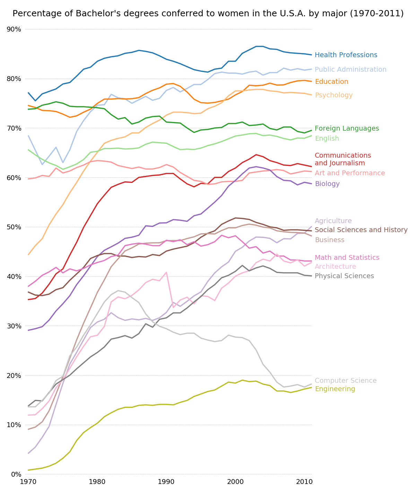

Version 2.2.2
Note
Click here to download the full example code
A graph of multiple time series which demonstrates extensive custom styling of plot frame, tick lines and labels, and line graph properties.
Also demonstrates the custom placement of text labels along the right edge as an alternative to a conventional legend.
import numpy as np
import matplotlib.pyplot as plt
from matplotlib.cbook import get_sample_data
fname = get_sample_data('percent_bachelors_degrees_women_usa.csv',
asfileobj=False)
gender_degree_data = np.genfromtxt(fname, delimiter=',', names=True)
# These are the colors that will be used in the plot
color_sequence = ['#1f77b4', '#aec7e8', '#ff7f0e', '#ffbb78', '#2ca02c',
'#98df8a', '#d62728', '#ff9896', '#9467bd', '#c5b0d5',
'#8c564b', '#c49c94', '#e377c2', '#f7b6d2', '#7f7f7f',
'#c7c7c7', '#bcbd22', '#dbdb8d', '#17becf', '#9edae5']
# You typically want your plot to be ~1.33x wider than tall. This plot
# is a rare exception because of the number of lines being plotted on it.
# Common sizes: (10, 7.5) and (12, 9)
fig, ax = plt.subplots(1, 1, figsize=(12, 14))
# Remove the plot frame lines. They are unnecessary here.
ax.spines['top'].set_visible(False)
ax.spines['bottom'].set_visible(False)
ax.spines['right'].set_visible(False)
ax.spines['left'].set_visible(False)
# Ensure that the axis ticks only show up on the bottom and left of the plot.
# Ticks on the right and top of the plot are generally unnecessary.
ax.get_xaxis().tick_bottom()
ax.get_yaxis().tick_left()
fig.subplots_adjust(left=.06, right=.75, bottom=.02, top=.94)
# Limit the range of the plot to only where the data is.
# Avoid unnecessary whitespace.
ax.set_xlim(1969.5, 2011.1)
ax.set_ylim(-0.25, 90)
# Make sure your axis ticks are large enough to be easily read.
# You don't want your viewers squinting to read your plot.
plt.xticks(range(1970, 2011, 10), fontsize=14)
plt.yticks(range(0, 91, 10), fontsize=14)
ax.xaxis.set_major_formatter(plt.FuncFormatter('{:.0f}'.format))
ax.yaxis.set_major_formatter(plt.FuncFormatter('{:.0f}%'.format))
# Provide tick lines across the plot to help your viewers trace along
# the axis ticks. Make sure that the lines are light and small so they
# don't obscure the primary data lines.
plt.grid(True, 'major', 'y', ls='--', lw=.5, c='k', alpha=.3)
# Remove the tick marks; they are unnecessary with the tick lines we just
# plotted.
plt.tick_params(axis='both', which='both', bottom=False, top=False,
labelbottom=True, left=False, right=False, labelleft=True)
# Now that the plot is prepared, it's time to actually plot the data!
# Note that I plotted the majors in order of the highest % in the final year.
majors = ['Health Professions', 'Public Administration', 'Education',
'Psychology', 'Foreign Languages', 'English',
'Communications\nand Journalism', 'Art and Performance', 'Biology',
'Agriculture', 'Social Sciences and History', 'Business',
'Math and Statistics', 'Architecture', 'Physical Sciences',
'Computer Science', 'Engineering']
y_offsets = {'Foreign Languages': 0.5, 'English': -0.5,
'Communications\nand Journalism': 0.75,
'Art and Performance': -0.25, 'Agriculture': 1.25,
'Social Sciences and History': 0.25, 'Business': -0.75,
'Math and Statistics': 0.75, 'Architecture': -0.75,
'Computer Science': 0.75, 'Engineering': -0.25}
for rank, column in enumerate(majors):
# Plot each line separately with its own color.
column_rec_name = column.replace('\n', '_').replace(' ', '_')
line = plt.plot(gender_degree_data['Year'],
gender_degree_data[column_rec_name],
lw=2.5,
color=color_sequence[rank])
# Add a text label to the right end of every line. Most of the code below
# is adding specific offsets y position because some labels overlapped.
y_pos = gender_degree_data[column_rec_name][-1] - 0.5
if column in y_offsets:
y_pos += y_offsets[column]
# Again, make sure that all labels are large enough to be easily read
# by the viewer.
plt.text(2011.5, y_pos, column, fontsize=14, color=color_sequence[rank])
# Make the title big enough so it spans the entire plot, but don't make it
# so big that it requires two lines to show.
# Note that if the title is descriptive enough, it is unnecessary to include
# axis labels; they are self-evident, in this plot's case.
fig.suptitle('Percentage of Bachelor\'s degrees conferred to women in '
'the U.S.A. by major (1970-2011)\n', fontsize=18, ha='center')
# Finally, save the figure as a PNG.
# You can also save it as a PDF, JPEG, etc.
# Just change the file extension in this call.
# plt.savefig('percent-bachelors-degrees-women-usa.png', bbox_inches='tight')
plt.show()
Keywords: matplotlib code example, codex, python plot, pyplot Gallery generated by Sphinx-Gallery